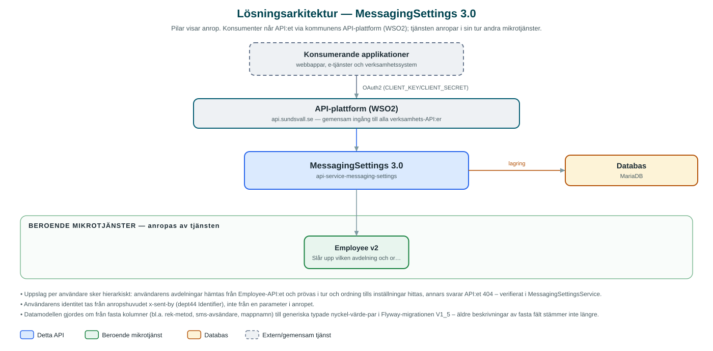

MessagingSettings
Håller verksamheternas inställningar för meddelandeutskick – till exempel avsändaruppgifter och kanalval – per kommun och avdelning, med uppslag utifrån inloggad användare.
Om API:et
MessagingSettings är registret över hur kommunens olika verksamheter vill att deras meddelanden ska skickas. I stället för att varje applikation hårdkodar avsändaruppgifter och kanalinställningar hämtas de härifrån, per kommun och avdelning. Tjänsten används av meddelandeflödena runt Messaging-API:et.
Inställningarna lagras som typade nyckel-värde-par (boolean, sträng, numeriskt eller webbadress) knutna till en kommun och en avdelning, till exempel avsändarnamn, mappnamn för fysiska brev eller vilken metod som används för rekommenderade försändelser. Modellen är generisk, så nya inställningar kan läggas till utan databasändringar.
Utöver vanlig hantering per inställning kan en applikation fråga efter inställningar för den organisation en användare tillhör: tjänsten slår då upp användarens avdelning via Employee-API:et och letar hierarkiskt – först på avdelningsnivå och därefter uppåt i organisationen – tills inställningar hittas.
Det här gör API:et
- Hämta inställningar – Inställningar listas per kommun med flexibla filteruttryck, eller hämtas per id.
- Skapa och uppdatera – Inställningsposter skapas, uppdateras och raderas per kommun och avdelning; enskilda nycklar kan raderas separat.
- Typade nyckel-värde-par – Varje inställning är ett nyckel-värde-par med typ (BOOLEAN, STRING, NUMERIC eller WEB), vilket gör modellen utbyggbar utan schemaändringar.
- Uppslag utifrån användare – Med användarens identitet i anropshuvudet slås tillhörande avdelning upp via Employee-API:et och inställningarna hämtas hierarkiskt för organisationen.
API-dokumentation
API:ets samtliga resurser, parametrar och datamodeller finns beskrivna i en OpenAPI-specifikation som är hämtad ur källkodsförrådet. Den kan utforskas interaktivt i Swagger UI eller laddas ner som YAML. Programvaruförteckningen (SBOM) listar tjänstens samtliga tredjepartskomponenter med version och licens.
Teknisk dokumentation
Nedan beskrivs hur tjänsten är uppbyggd, vilka andra tjänster den anropar och vad som krävs för att driftsätta den. Informationen är härledd ur källkoden och dess konfiguration på GitHub.
Arkitektur

API:et är en mikrotjänst (Java 25, Spring Boot via kommunens gemensamma tjänsteplattform dept44 (8.0.8), byggd med Maven). Konsumenter når tjänsten via kommunens gemensamma API-plattform (WSO2) på api.sundsvall.se – tjänsten anropas aldrig direkt. Tjänsten anropar i sin tur andra mikrotjänster i kommunens tjänstelandskap. Lagring: MariaDB med Flyway-migrationer; inställningarna lagras som typade nyckel-värde-par per kommun och avdelning.
Teknikstack
- Språk: Java 25
- Ramverk: Spring Boot via kommunens gemensamma tjänsteplattform dept44 (8.0.8), byggd med Maven
- Databas: MariaDB med Flyway-migrationer; inställningarna lagras som typade nyckel-värde-par per kommun och avdelning
- Övrigt: JPA med specifikationsbaserad filtrering
Beroenden till andra mikrotjänster
Tjänsten anropar följande mikrotjänster. Versionerna är hämtade ur källkodens integrationsklienter.
| Tjänst | Version | Användning |
|---|---|---|
| Employee | v2 | Slår upp vilken avdelning och organisation en användare tillhör vid uppslag av inställningar per användare. |
Programvaruförteckning
Tjänsten bygger på 300 tredjepartskomponenter fördelade på 15 olika licenser. Till skillnad från tabellen ovan, som listar andra mikrotjänster, avses här de programbibliotek som ingår i bygget. Se programvaruförteckningen för hela listan.
Konfiguration och driftsättning
- URL och OAuth2-klientuppgifter (client credentials) för Employee-API:et
- AD-domän per kommun för användaruppslag (integration.employee.domains)
- MariaDB-anslutning; databasschemat versionshanteras med Flyway
- Anrop görs per kommun – municipalityId ingår i alla API-vägar
Noterbart ur källkoden
- Uppslag per användare sker hierarkiskt: användarens avdelningar hämtas från Employee-API:et och prövas i tur och ordning tills inställningar hittas, annars svarar API:et 404 – verifierat i MessagingSettingsService.
- Användarens identitet tas från anropshuvudet x-sent-by (dept44 Identifier), inte från en parameter i anropet.
- Datamodellen gjordes om från fasta kolumner (bl.a. rek-metod, sms-avsändare, mappnamn) till generiska typade nyckel-värde-par i Flyway-migrationen V1_5 – äldre beskrivningar av fasta fält stämmer inte längre.
- Vilken AD-domän användare slås upp mot styrs per kommun i konfigurationen, så flera kommuner med olika kataloger kan dela tjänsten.
Källkod
Källkoden är öppen och finns hos Sundsvalls kommun på GitHub. I källkodsförrådet finns även instruktioner för att klona, konfigurera och starta tjänsten i egen miljö.